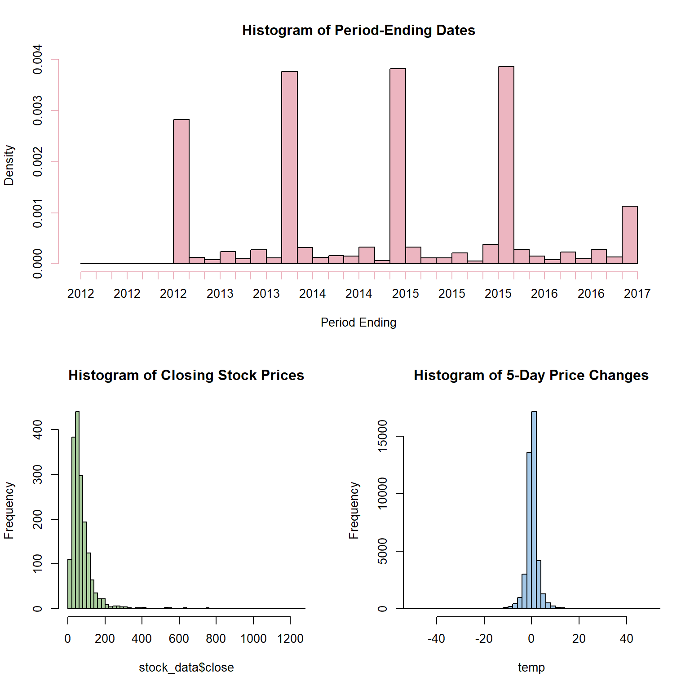
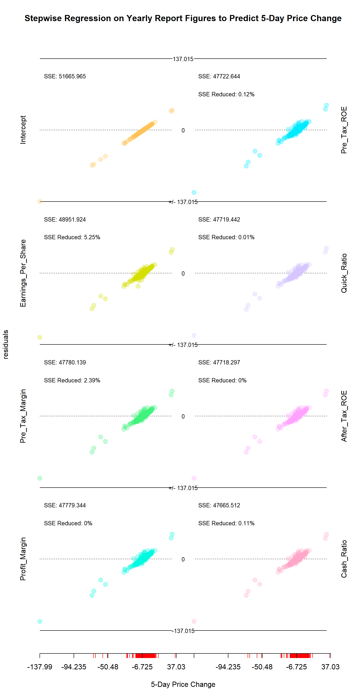
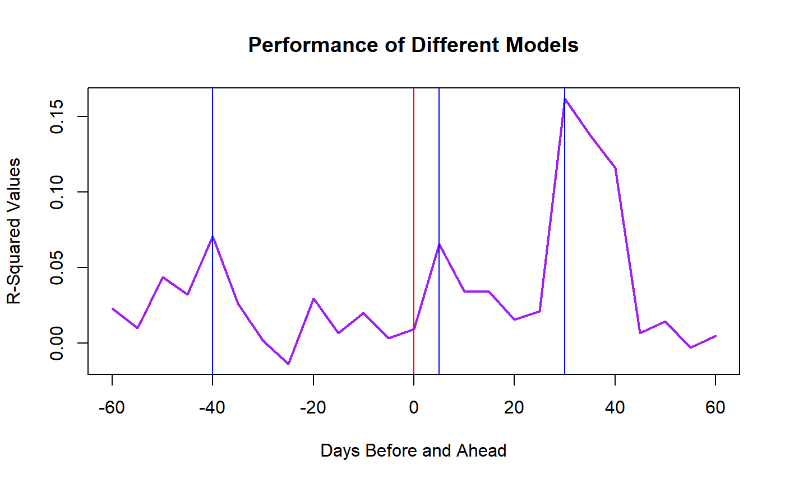

yearly_report_analysis.rmdThis notebook is concerned with the question of how important the summary statistics contained in yearly reports are on stock prices. More specifically, it is concerned with the question of when those statistics are most important. Is it at the time that the report is released–usually a couple of months after the year-ending period–that these figures have the most explanatory power? Or do the most interested parties figure out these figures well before the report is released, making them most important just after the year-ending period? Yet another possibility would be that interested parties can so effectively anticipate these figures so that their impact is dispersed and no sudden change in price can be attributed to them? Using regression analysis, this notebook seeks to answer which of these models is correct.
There is a statistical figure that specifically measures the explanatory power of a particular set of independent variables on a dependent variable: R-Squared. Normally R-Squared is one of several variables used to meausure model effectiveness, but here it serves as a useful measure of how important the figures of a yearly report are. The independent variable we are using is the number of business days before or after the reporting period for a company ends.
For each day we wish to R-Squared, we need a model. For these models, the dependent variable is the change in stock price compared to five business days earlier, and for independent variables we will use whichever two figures from our data are found to be the most important five business days after the year-ending period.
We are making use of a NYSE Dataset available on Kaggle. Despite its name, it includes many stocks from the Nasdaq as well as the NYSE. This is historical data ranging from 2012 to 2016, and covering 501 distinct stocks–though this does include GOOG and GOOGL (Google class C and Google class A shares respectively whose prices differ very little). The dataset consists of four tables, one of which includes daily price data, and another of which has data on each stock for a given year. Unfortunately, quarterly reports are not included, limiting the number of useful cases available.
The variables we are concentrating on for our sub-models will be those that are already normalized for a company’s size. Thus such numbers as the earnings per share, cash ratio, and profit margins. Rather than include the full dataset, which would be over 100MB, we are instead doing most of the cleaning and wrangling in a seperate program before loading it.
## # A tibble: 6 x 35
## After_Tax_ROE Cash_Ratio Pre_Tax_Margin Pre_Tax_ROE Profit_Margin Quick_Ratio
## <dbl> <dbl> <dbl> <dbl> <dbl> <dbl>
## 1 23 53 10 31 8 72
## 2 67 75 8 80 7 96
## 3 143 60 8 159 7 80
## 4 135 51 11 82 19 67
## 5 32 23 10 52 6 34
## 6 26 40 10 41 6 52
## # ... with 29 more variables: Earnings_Per_Share <dbl>, symbol <chr>,
## # date <date>, close <dbl>, minus60_days <dbl>, minus55_days <dbl>,
## # minus50_days <dbl>, minus45_days <dbl>, minus40_days <dbl>,
## # minus35_days <dbl>, minus30_days <dbl>, minus25_days <dbl>,
## # minus20_days <dbl>, minus15_days <dbl>, minus10_days <dbl>,
## # minus5_days <dbl>, minus0_days <dbl>, plus5_days <dbl>, plus10_days <dbl>,
## # plus15_days <dbl>, plus20_days <dbl>, plus25_days <dbl>, plus30_days <dbl>,
## # plus35_days <dbl>, plus40_days <dbl>, plus45_days <dbl>, plus50_days <dbl>,
## # plus55_days <dbl>, plus60_days <dbl>Simply looking at some histograms of the data, the dates for period-ending range from late 2012 to early 2017–with most being just before New Years, but many use other dates. The closing price of these companies is somewhat of a pareto distribution–hardly uncommon for price data. Finally, if we look at the 5-business day changes in stock prices (looking at +/- 60 market days each companies year-end), these are normally distributed.
layout( matrix(data = c(1,1,2,3), nrow = 2, byrow = TRUE) )
col = hcl(h = 0, c = 50, l = 70, alpha = 0.7)
hist(stock_data$date, breaks = 50, main = 'Histogram of Period-Ending Dates', xlab = 'Period Ending', col = col)
col = hcl(h = 120, c = 50, l = 70, alpha = 0.7)
hist(stock_data$close, breaks = 'Scott', main = 'Histogram of Closing Stock Prices', col = col)
temp = NULL
for (i in 10:ncol(stock_data) ) temp = unlist(c(temp, stock_data[,i] ))
col = hcl(h = 240, c = 50, l = 70, alpha = 0.7)
hist( temp, breaks = 'Scott', xlim = c(-50,50) , main = 'Histogram of 5-Day Price Changes', col = col)
While most of the data becomes clean, but there is one piece that remains to be addressed. The price changes for five-day periods were created using lag and lead functions–but these create NAs at the beginning and end of the dataset where there is no data to shift into the cells. This problem gets worse as the number of cells shifted increase, so that if a column for prices shifted 5 business days has 1 NA value, shifted it 10 days will give 6 NA values, and 60 days will give 56 NA values.
So when looking at our sub-models, there is a question of whether we should maximize the data available at the cost of some models having more data to work with than others (inconsistency), or whether we should prioritize consistency at the cost of dropping more data. Here, we are going with the latter option.
before <- nrow(stock_data)
stock_data <- stock_data %>%
tidyr::drop_na()
print(paste('Dropped', before - nrow(stock_data), 'rows.' ) )## [1] "Dropped 497 rows."To choose variables for the sub-models, this notebook uses a stepwise regression to find which figures have the most explanatory power for 5-day price changes. The step_regression function makes a rough estimate of which variables in a design matrix are most sigificant, then regresses them out one-by-one and calculates how the residuals change. We then plot the changing residuals with their Mean-Squared Error and how much each subsequent variable reduces the SSE
Looking at the results, there are two variables that stand out: earnings per share and the pre-tax profit margin. Once these two are included, none of the other variables explains so much as 1% of the the variation. Moreover, these are clearly important variables: the question was simply whether they were more or less important than the post-tax profit margin or the pre/post-tax return on equity. Thus for our sub-models, we will be using these two and no others.
x <- stock_data[,c(1:7)]
x = as.matrix(x)
y <- stock_data$plus5_days
y = as.vector(y)
res_matrix <- StepRegression::step_regression(x = x, y = y)
StepRegression::res_plotter_double(res = res_matrix, y = y, xlab = '5-Day Price Change', main = 'Stepwise Regression on Yearly Report Figures to Predict 5-Day Price Change')
stock_data <- stock_data %>%
dplyr::select( - .data$Profit_Margin, - .data$Quick_Ratio, - .data$Pre_Tax_ROE,
- .data$Cash_Ratio, - .data$After_Tax_ROE)
head(stock_data)## # A tibble: 6 x 30
## Pre_Tax_Margin Earnings_Per_Sh~ symbol date close minus60_days
## <dbl> <dbl> <chr> <date> <dbl> <dbl>
## 1 10 -5.6 AAL 2012-12-31 13.5 0.6
## 2 8 -11.2 AAL 2013-12-31 25.2 1.45
## 3 8 4.02 AAL 2014-12-31 53.6 -0.100
## 4 11 11.4 AAL 2015-12-31 42.3 -1.05
## 5 10 5.29 AAP 2012-12-28 71.5 0.150
## 6 10 5.36 AAP 2013-12-27 110. 1.16
## # ... with 24 more variables: minus55_days <dbl>, minus50_days <dbl>,
## # minus45_days <dbl>, minus40_days <dbl>, minus35_days <dbl>,
## # minus30_days <dbl>, minus25_days <dbl>, minus20_days <dbl>,
## # minus15_days <dbl>, minus10_days <dbl>, minus5_days <dbl>,
## # minus0_days <dbl>, plus5_days <dbl>, plus10_days <dbl>, plus15_days <dbl>,
## # plus20_days <dbl>, plus25_days <dbl>, plus30_days <dbl>, plus35_days <dbl>,
## # plus40_days <dbl>, plus45_days <dbl>, plus50_days <dbl>, plus55_days <dbl>,
## # plus60_days <dbl>r_squared_values <- NULL
day_shift <- c(seq(from = -60, to = 60, by = 5) )
x <- as.matrix(stock_data[,c('Pre_Tax_Margin','Earnings_Per_Share')])
for (i in 6:ncol(stock_data) ){
y <- as.vector(unlist(stock_data[,i]))
denominator <- sum( (y - mean(y) )^2 )
r_squared_values <- c(r_squared_values, 1- sum( (y - x %*% solve(t(x) %*% x) %*% t(x) %*% y)^2) / denominator) }
model_res = cbind(day_shift, r_squared_values)
head(model_res)## day_shift r_squared_values
## [1,] -60 0.02290056
## [2,] -55 0.01015725
## [3,] -50 0.04361948
## [4,] -45 0.03225700
## [5,] -40 0.07076405
## [6,] -35 0.02648990Using earnings per share and the pre-tax profit margin, I constructed a series of models using the same independent variables, earnings per share and pre-tax profit margin, but each attempting to predict a change in price over a different 5-business day period. These in turn give us the real variable we are interested in: the R-Squared–in other words, how well two key variables from a yearly report measure the change over a five-day period. Peaks should indicate when these figures were most important to the market.
plot(model_res, type = 'l', col = 'purple', lwd = 2, main = 'Performance of Different Models', xlab = 'Days Before and Ahead', ylab = 'R-Squared Values')
abline(v = 0, col = 'red')
abline(v = -40, col = 'blue')
abline(v = 5, col = 'blue')
abline(v = 30, col = 'blue')
Looking at the plot, we see the R-Squared values have three peaks: one at -40-business days, another at 5-business days, and the highest at 30-business days. The first two peaks are relatively low, but assuming they were significant, then the -40-day peak is likely the result of numbers in the 3rd-quarter reports that are anticipatory of the yearly report, while the 5-day peak could be a result of early estimates of the numbers in the yearly report.